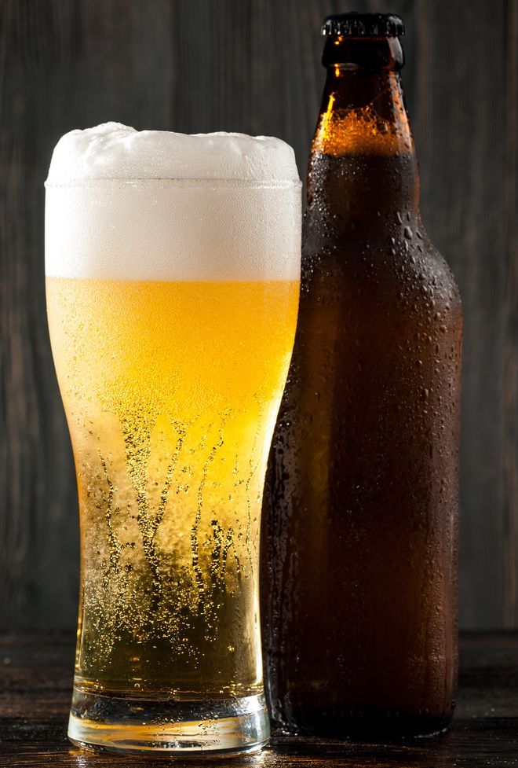
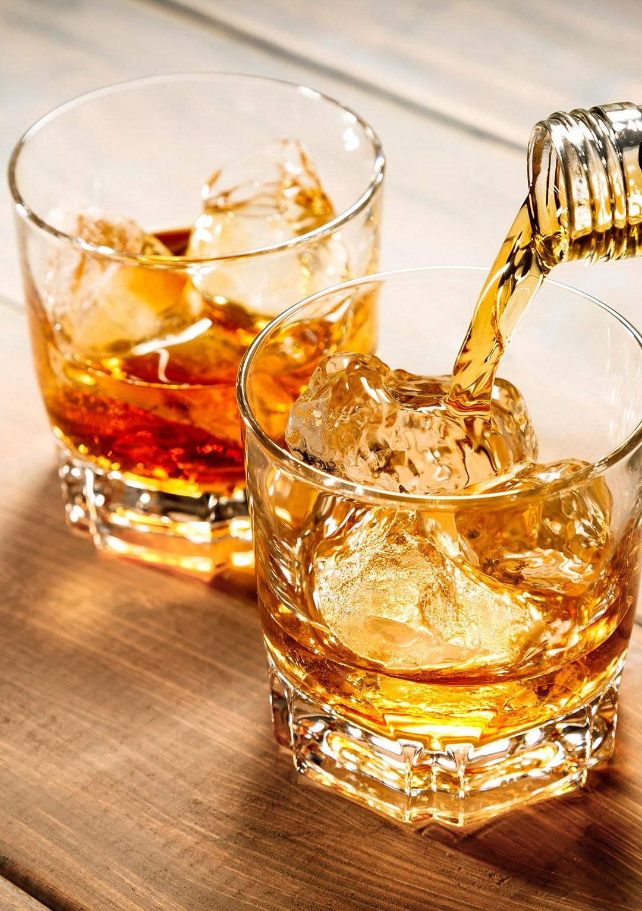

Bares
Ciudad de Edimburgo

La vida en la ciudad discurre entre bares. Sus habitantes tienen estos lugares como habituales y del dia a dia. Según su especialidad y el valor de sus productos, veamos el ranking:
(Dato: Los escoceses NUNCA aceptan donaciones.)
- *Bares especialistas en Cerveza;
- Estos Bares llevan años modificando las cervezas hasta crear un mapa completo del lúpulo inglés.
|
- The Crow´s Corner.
Cerveza Ohmia.
Cerveza Lennister.
- Lennister´s Palace.
Cerveza The Hugger.
- The Royal Mile Pub.
- Scottish Bar.
Cerveza The First.
- Museo de ciencias naturales.
Momias del antiguo Egipto.
Oveja Dolly embalsamada.
- Casual Dry Bar.
Cerveza europea.
Cerveza casa Roul.
Cerveza player 8.
|

|
- *Bares especialistas en Whisky;
- Estos Bares llevan desde sus inicios elaborando y macerando su propio Whisky con reconomiento de origen.
|
- Just Whisky Bar.
Wings Whisky.
whisky Sehere.
- Local Inn Bar.
Whisky Roal.
Whisky Dolian.
Whisky black door.
- Pub The Guardian.
- Pub Melocen inn.
Giratina Whisky.
- Bar Natural Streem.
Whisky Streem.
Whisky Doble Streem.
- Tower Bar.
Whisky 2T.
|

|
Ver más tipos de cerveza.
Ver más tipos de whisky